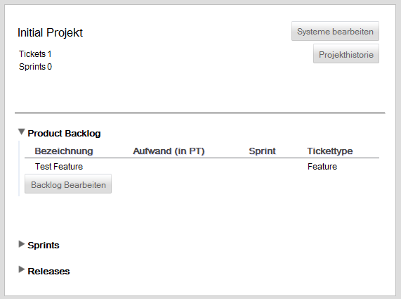

Product Backlog
Das Product Backlog bietet eine Übersicht über alle Product-Backlog-Items, welche einem Projekt zugeordnet sind.
Nachdem ein Projekt ausgewählt wurde, kann mit einem Klick auf "Product Backlog" das Product Backlog geöffnet werden.

Alle aktiven Product-Backlog-Items werden im Product Backlog in einer tabellarischen Darstellung aufgeführt. Dabei wird neben der Bezeichnung auch der Aufwand in Personentagen, dem zugeordneten Sprint auch der Tickettyp aufgeführt.
Durch Betätigen des Buttons "Backlog Bearbeiten" kann das Backlog bearbeitet werden.
Created with the Personal Edition of HelpNDoc: Easily create Help documents